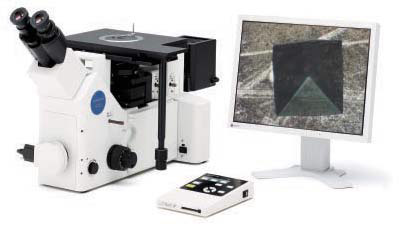
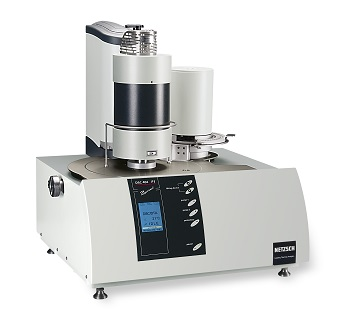
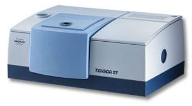

Инвертированный микроскоп
Назначение: исследования в режимах светлого поля, темного поля, ДИК Номарского и простом поляризованном свете.
Полностью универсальная система со всеми функциями металлографии
Модульная конструкция
Исследования в проходящем и отраженном свете, комбинированная версия
Наблюдения: «светлое поле», «темное поле», «поляризация»
Возможна установка коэффициента Zoom (1х-2х), моторизированного револьвера объективов и фильтров
Высококачественная UIS оптика
Увеличение от 25х до 1500х
Поворотный бино- и тринокулярный тубус
Встроенный видео/фото порт
Исследование образцов весом до 5 кг.
Термомеханический анализатор
производитель: NETZSCH
Назначение: Термомеханический анализ с целью построения зависимости деформации полимера от температуры при непрерывном ее повышении. Определение температура стеклования, температура текучести, модуль высокоэластичности в зоне плато.
| Основные технические характеристики | |
|---|---|
| Макс. размеры образца, мм | 30 |
| Диапазон нагрузки, Н | от 0,001 до 3 с шагом 0,2 мН |
| Конечное давление, мбар | менее 10^-4 |
| Диапазон измерений, мм | ± 2,5 |
| Цифр. разрешение (нагрузка), мН | менее 0,01 |
| Подключаемые газы | 1 защитный газ, 2 продувочных газа |
| Цифр. разрешение (длина), нм | 0,125 |
| Частота модуляции, Гц | до 1 |
| Диапазон температур, °С | от -150 до 1550 |
производитель: BRUKER
Назначение: исследование структурного состава полимера.
| Основные технические характеристики | |
|---|---|
| Спектральный диапазон, см^-1 | 7,500-370 / 10,000-200 (опция) |
| Разрешение, см^-1 | 1 / 0,5 (опция) |
| Соотношение сигнал-шум,(пик к пику) | 8,000 : 1 / (5 сек, разрешение 4 см^-1), 45,000 : 1 / (1 мин, разрешение 4 см^-1) |